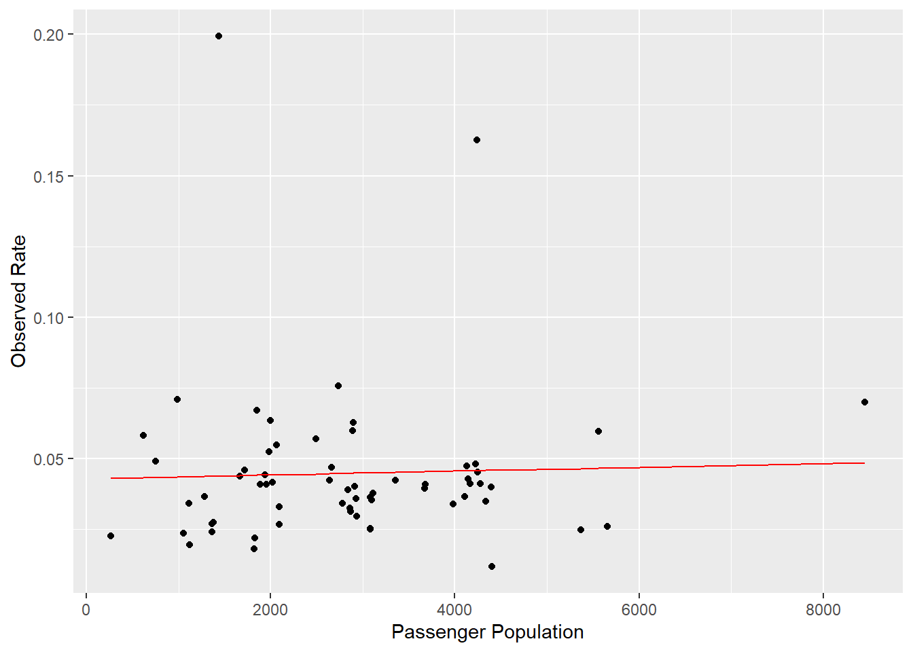

Intercept-Only Model
The intercept-only regression model contains no predictor variables. For our purpose, it serves as a baseline reference to the efficacy of our other models.
The general model is shown below:
\[\begin{equation} Y_{ij} = \beta_0*\epsilon_{i,j} \end{equation}\]We’re using the duration of our voyages as the intercept, and plotting the results of the model against the reported rate of infection and the duration of the voyages.
The lm function is used, where we declare our infection variable, (our reported rates), to total_days, (our voyage duration), referencing our master data frame.
##
## Call:
## lm(formula = infection ~ size, data = cruisedata.df)
##
## Residuals:
## Min 1Q Median 3Q Max
## -0.034107 -0.012933 -0.004742 0.002294 0.155384
##
## Coefficients:
## Estimate Std. Error t value Pr(>|t|)
## (Intercept) 4.295e-02 8.011e-03 5.361 1.34e-06 ***
## size 6.776e-07 2.529e-06 0.268 0.79
## ---
## Signif. codes: 0 '***' 0.001 '**' 0.01 '*' 0.05 '.' 0.1 ' ' 1
##
## Residual standard error: 0.02882 on 61 degrees of freedom
## Multiple R-squared: 0.001176, Adjusted R-squared: -0.0152
## F-statistic: 0.07181 on 1 and 61 DF, p-value: 0.7896We’ll create a data frame for our model’s predictions of rate, declaring an empty column for that prediction and placing in our reported rate as well as our voyage duration as additional columns.
df.predm1 <- data.frame(yhat_rate = NA,
actual_rate = cruisedata.df$infection,
size = cruisedata.df$size)
df.predm1$yhat_rate <- predict(m1,newdata=df.predm1)
head(df.predm1)## yhat_rate actual_rate size
## 1 0.04577220 0.04125690 4169
## 2 0.04588604 0.03504727 4337
## 3 0.04493127 0.03586066 2928
## 4 0.04492043 0.04017857 2912
## 5 0.04407544 0.04384384 1665
## 6 0.04419945 0.06709957 1848We’ll use ggplot to visualize the model on a line plot, with the X-axis being our voyage duration, the Y-axis being our observed rates, and the rate predictions of the model shown as a red line.
ggplot(data = df.predm1, aes(x=size, y=actual_rate)) +
labs(x="Passenger Population", y="Observed Rate") +
geom_point() +
geom_line(aes(y=yhat_rate), color='red')